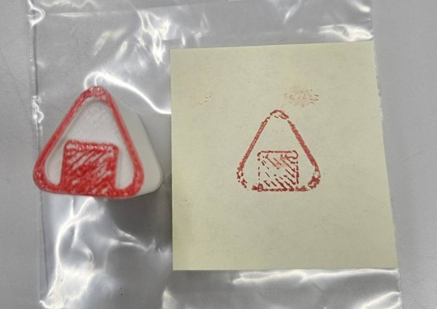
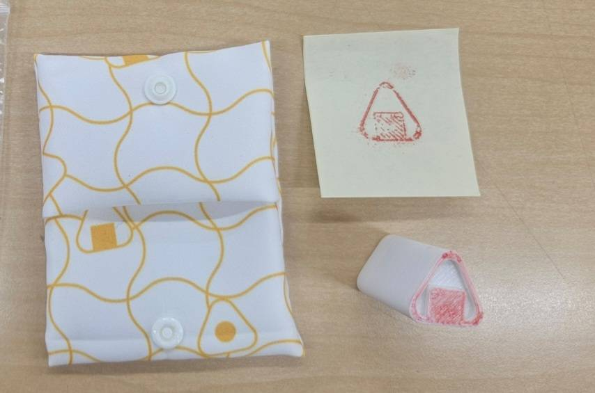

- トップ >
- つぶやき
つぶやき
おにぎりづくりの豆知識やおにぎり関係であったことなど、私の日々のつぶやきを投稿します！
3Dプリンターでスタンプ作り！（2026.4/20）

3Dプリンターでスタンプ作りをしました！blenderでスタンプの形を作るのが大変でしたが、かわいいおにぎり型のスタンプを作ることができました。プリンターの使用で海苔部分に斜線が入ってしまいましたが、あじがあって気に入っています！
布プリンターでスタンプケース作り！（2026.6/15）

布プリンターでおにぎり柄のスタンプケースを作りました！ノーマルおにぎり、海苔おにぎり、梅おにぎりの柄があります。